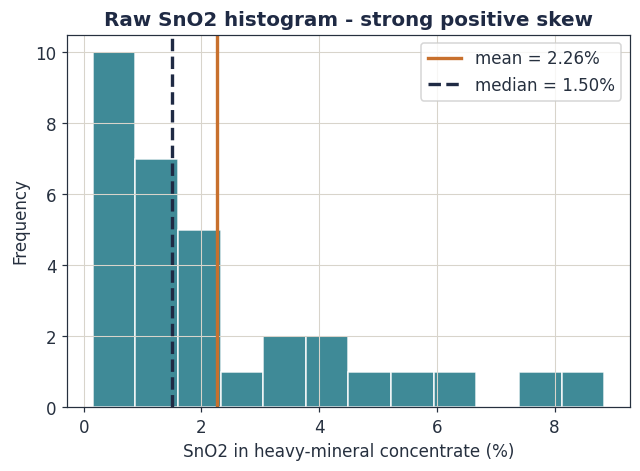
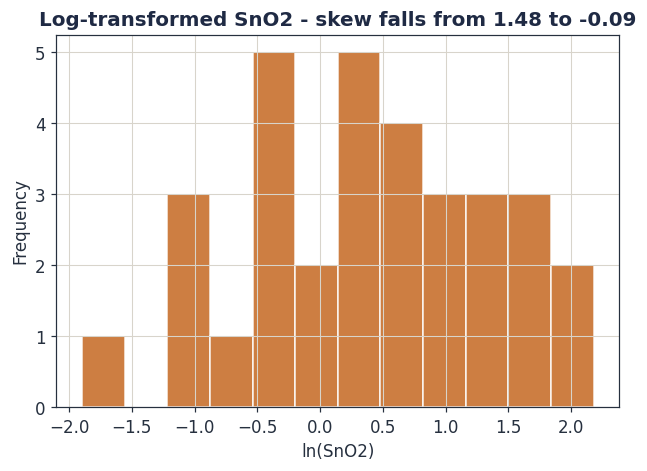
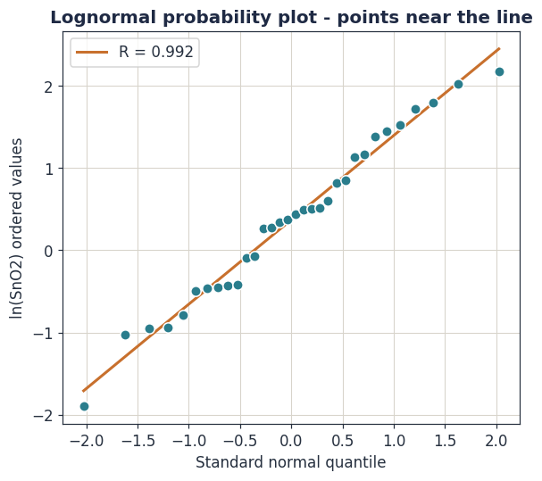
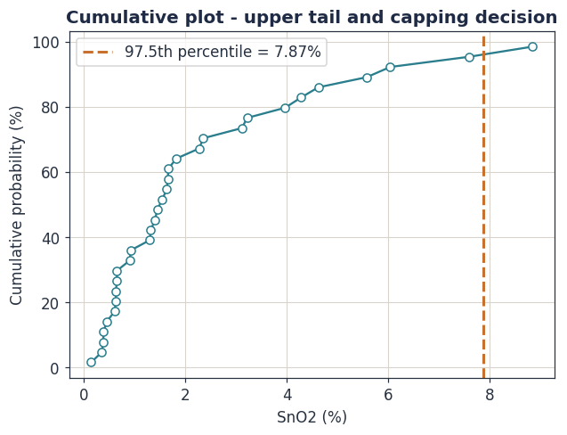
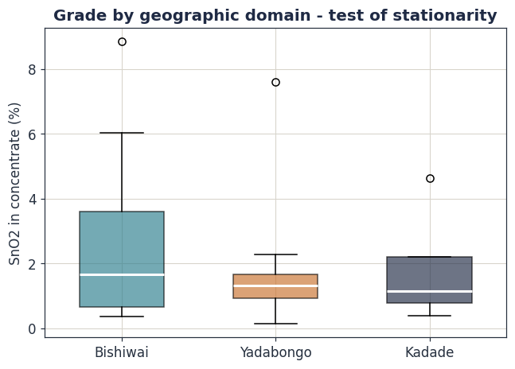

Exploratory Data Analysis and the Statistics of Grade
Before grade can be estimated in space, it must be understood as a number. This module builds the statistical description of a grade dataset — its distribution, its skew, its outliers and its hidden spatial bias — and ends at the single most important judgement in the whole workflow: the decision of the stationary domain.
Learning objectives
- Compute and interpret the univariate statistics that describe a grade distribution.
- Explain why grades are lognormal, and use the log-transform and probability plot correctly.
- Recognise clustered sampling and correct the bias by declustering.
- Diagnose outliers and decide a defensible top-cut.
- Composite samples to a common support and explain the variance consequence.
- State the stationarity assumption and define geological domains for the two Toro orebodies.
3.1 Why exploratory data analysis comes first
Exploratory data analysis (EDA) is the deliberate, sceptical interrogation of a dataset before any model is imposed on it. It is not a formality. Every estimation method carries assumptions — that the data are of equal support, drawn from one population, free of blunders, representative in space — and EDA is where those assumptions are checked against reality. A variogram fitted to a dataset that secretly contains two geological populations is not a slightly worse model; it is a meaningless one.
The Toro grade dataset, after the Module 2 audit, is 32 field-sample SnO₂ values resolving to 26 pit locations. Small — and that smallness is part of what EDA must reveal honestly.
3.2 The univariate description of grade
Treat the set of \(n\) grades as realisations of a random variable \(Z\). The first task is to describe that variable's distribution with a compact set of statistics. Each one answers a specific question.
Measures of central tendency
The arithmetic mean is the estimate of the deposit's average grade and therefore, with tonnage, of contained metal:
The median \(M\), the 50th percentile, is the central value when the data are ranked. For a symmetric distribution mean and median coincide. When they diverge, the gap is itself a diagnostic: for grade data the mean almost always exceeds the median, and the size of that excess measures skew.
Measures of spread
The sample variance uses the divisor \(n-1\) (Bessel's correction), which makes it an unbiased estimator of the population variance:
Variance is the master quantity of this entire course: geostatistics is, in the end, the study of how variance is structured in space. The coefficient of variation rescales the standard deviation by the mean to give a dimensionless measure of relative variability:
Measure of shape
The coefficient of skewness is the third standardised moment. It measures asymmetry; a positive value means a long tail of high values:
Running these formulas on the 32 field-sample SnO₂ grades:
| Statistic | Value | Reading |
|---|---|---|
| Count n | 32 | small — reconnaissance scale |
| Minimum | 0.15% | |
| Maximum | 8.84% | a 59-fold range |
| Mean | 2.27% | |
| Median | 1.50% | well below the mean — right-skewed |
| Std deviation | 2.21% | |
| CV | 0.98 | borderline erratic — expect a top-cut decision |
| Skewness | +1.48 | strong positive skew |
The mean exceeds the median by 51%, the CV is almost 1, and skewness is +1.48. Every statistic tells the same story: this is a skewed, high-variance grade. That is not a Toro peculiarity — it is how metal grades almost always behave, and section 3.3 explains why.

3.3 The lognormal model of grade
Metal grades are positively skewed for a physical reason. Grade is the product of many multiplicative geological processes — fluid flux, partitioning, fractionation, weathering, mechanical concentration. When independent random factors multiply, their product tends, by the multiplicative form of the central limit theorem, towards a lognormal distribution. A variable \(Z\) is lognormal when its logarithm is normal:
The lognormal model is not a curiosity — it explains the mean-median gap exactly. For a lognormal variable:
The diagnostic tools follow directly. The log-transform \(Y=\ln Z\) should turn a skewed grade histogram into a symmetric one. The lognormal probability plot — ordered log-grades against standard normal quantiles — should fall on a straight line if the model holds; departures at the top reveal a second high-grade population or outliers.


When a dataset is small and strongly lognormal, the ordinary arithmetic mean is an unbiased but high-variance estimator of the true mean — one or two samples can move it substantially. Sichel's t-estimator uses the lognormal form (equation 3.6) to estimate \(\mathbb{E}[Z]\) more efficiently from \(\mu\) and \(\sigma^2\). With only 32 Toro samples this is a real effect: it is a reason the global mean grade itself carries meaningful uncertainty, quite apart from where the metal sits in space.
It is tempting to estimate in log space (it is better-behaved) and then exponentiate. But \(\mathbb{E}[e^{Y}]\neq e^{\mathbb{E}[Y]}\): exponentiating a kriged log-grade does not give the kriged grade, and the error is a systematic bias. Lognormal and indicator kriging exist precisely to handle skewed grades correctly. The safe default, used in Module 5, is to estimate in original units with ordinary kriging after a sensible top-cut.
3.4 Clustered sampling and declustering
Exploration data are never laid down on a neat grid. Geologists drill and pit where they expect grade — near showings, along anomalies, around artisanal workings. The result is preferential clustering: high-grade ground is over-sampled relative to its true area. The naive arithmetic mean of equation (3.1) then over-weights the cluster and overstates the deposit.
The fix is declustering: replace the equal-weight mean with a weighted mean in which each sample's weight reflects the area it represents.
In cell declustering, a regular grid is laid over the data; each occupied cell is given an equal share of the total weight, and the samples inside a cell split that cell's weight between them. A sample in a crowded cell therefore receives a small weight; an isolated sample receives a large one. The cell size is varied and the one that minimises the declustered mean is often chosen, on the logic that clustering was towards high grade.
The Toro sampling is markedly clustered. The Bishiwai and Yadabongo drainages carry the great majority of the 26 pits, tightly spaced; Kadade, several kilometres south, carries only a handful. If Bishiwai happens to be richer than Kadade, the naive mean of 2.27% SnO₂ is biased towards Bishiwai and overstates the licence as a whole. A declustered mean is the honest global figure — and the gap between the two numbers is a direct measure of how much the sampling pattern, rather than the geology, is shaping your headline grade.
3.5 Outliers and the top-cut decision
In a skewed dataset a few extreme values exert leverage far beyond their number. With \(n=32\), each Toro sample contributes on average 1/32 = 3.1% of the count — but the single 8.84% value contributes roughly 12% of the summed grade. If that one pit is a genuine but unrepresentative high, kriging will smear its grade across a wide volume and overstate contained metal. Top-cutting (capping) limits this: values above a chosen cap are reset to the cap.
The cap is a matter of documented judgement, informed by several converging diagnostics: the point on the lognormal probability plot where the upper tail breaks away from the line; the cumulative probability curve; the metal-at-risk carried by the top one or two samples; and a plot of the resulting mean against cap value, looking for where the mean stabilises.

The widget makes the trade-off concrete. Cap too hard and you throw away metal that is really there and sterilise the project's upside; cap too lightly and a single erratic pit drives the resource. There is no formula that removes the judgement — but there is a firm rule: whatever cap you choose, it must be stated, justified, and its effect on the contained metal disclosed. An undisclosed top-cut is a reporting failure under every code.
3.6 Compositing: putting samples on equal support
Statistics implicitly assume the data are comparable — that each \(z_i\) describes the same kind of thing. Raw samples violate this: a 0.5 m drill interval and a 2 m interval, or a 100 kg and a 250 kg bulk sample, are different supports. Support is the size, shape and orientation of the volume a grade refers to, and it is a property that must be tracked as carefully as the grade itself.
Compositing combines raw samples into regular intervals of a common support — typically fixed-length down-hole composites. The composite grade is a length-weighted (for placers, volume- or mass-weighted) average:
Compositing has a consequence that reaches forward into the rest of the course: averaging reduces variance. Composited grades scatter less than the raw samples they are built from, because combining volumes averages out small-scale fluctuation. This is the first appearance of the support effect — the principle that variance falls as the volume of estimation grows. It is why a block model of large blocks is smoother than the drill data, and it is formalised by the volume-variance relationship in Module 6.
The Module 2 audit composited the Toro layer samples with a simple mean, only because the field logs do not consistently record the thickness of each sampled layer. Equation (3.8) shows why that is a genuine compromise rather than a tidy-up: without \(\ell_i\), a thin, rich gravel stringer and a thick, lean one are averaged as equals. Recording the sampled interval on every future pit and drillhole is the precondition for a correct composite — and therefore for a correct grade.
3.7 Domains and the decision of stationarity
This is the most consequential idea in the module, and arguably in the course. Every estimation method assumes that the data being pooled belong to one population — that grade behaves in a statistically consistent way across the volume being estimated. That assumption is called stationarity.
Stationarity is the assumption that the statistical properties of grade — its mean, its variance, its spatial continuity — do not depend on absolute position within the volume considered. A domain (or estimation domain) is a volume of rock within which stationarity can reasonably be assumed: one mineralisation style, one grade population, one set of geological controls.
Stationarity is not a property you can test for and prove. It is, in Journel's phrase, a decision — a modelling choice made by the geologist, defended by geological reasoning and supported, not established, by statistics. The supporting evidence includes side-by-side histograms and box plots of candidate sub-areas, and contact analysis: plotting grade against distance across a proposed boundary to see whether it steps (a hard boundary, estimate each side only from its own data) or grades through (a soft boundary).

If two genuinely different populations are pooled and estimated together, the result is wrong everywhere. A high-grade vein pooled with its low-grade halo produces a variogram that describes neither, and a kriging that bleeds vein grade into waste and waste grade into vein. At Toro the non-negotiable boundary is between the alluvial and primary targets: they are different rocks, different grade units (g/m³ versus % Sn), different geometries and different populations. They must be estimated as entirely separate domains. They may not share a single sample, a single variogram, or a single block model.
Within the alluvial target, a further question is whether each drainage — Bishiwai, Yadabongo, Kadade — is its own placer domain. Geologically that is plausible: each drainage is a separate sediment-transport system with its own source and hydraulics. The present data cannot resolve it, so the working decision is to carry them as separate sub-domains and revisit once drilling adds data — a conservative choice that avoids the cardinal sin.
3.8 Worked example: EDA on the Toro grades in Python
The whole module condenses into a short, reproducible script. This is
the EDA section of toro_analysis.py.
import numpy as np, pandas as pd
from scipy import stats
fs = pd.read_csv("data/toro_field_samples.csv")
z = fs["SnO2"].values # 32 field-sample grades
n = len(z)
mean = z.mean()
median = np.median(z)
sd = z.std(ddof=1) # Bessel's n-1
cv = sd / mean
skew = stats.skew(z)
print(f"n={n} mean={mean:.2f} median={median:.2f}")
print(f"sd={sd:.2f} CV={cv:.2f} skew={skew:+.2f}")
# n=32 mean=2.27 median=1.50
# sd=2.21 CV=0.98 skew=+1.48
# lognormal test: skewness should collapse under the log-transform
lz = np.log(z)
print(f"log-skew={stats.skew(lz):+.2f}") # log-skew=-0.09
# how much metal sits in the top two samples?
top2 = np.sort(z)[-2:].sum() / z.sum() * 100
print(f"top 2 of 32 samples carry {top2:.0f}% of summed grade")
# top 2 of 32 samples carry 23% of summed grade
The last line is the quantitative case for the top-cut: two samples out of 32 — 6% of the data — carry 23% of the summed grade. That concentration of leverage is exactly what capping is designed to control, and exactly what the codes require you to disclose.